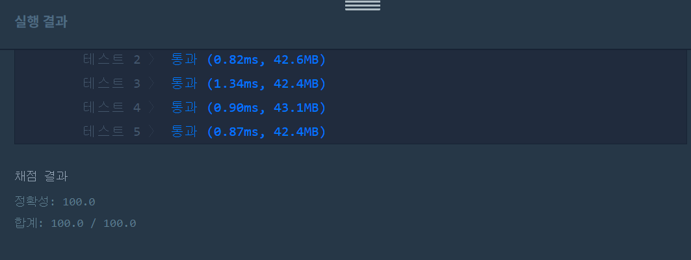

👀 문제
https://programmers.co.kr/learn/courses/30/lessons/43163
👊 도전
1. 설계
- words에 target이 없다면 변환은 불가하다.
- 있을 경우 변환 과정을 DFS(재귀함수)로 찾는다.
- words를 순회하며 방문하지 않은 words[i]라면, begin에서 words[i]로 갈 수 있는지 확인한다.
- 갈 수 있다면 words[i]로 재귀함수를 호출한다.
- 모든 변환 과정을 계산, 가장 최솟값을 answer에 저장한다.
2. 구현 (성공 코드)
/**
*
* @author HEESOO
*
*/
class Solution {
boolean[] visit;
int answer=0;
public int solution(String begin, String target, String[] words) {
visit=new boolean[words.length];
for(int i=0;i<words.length;i++){
if(words[i].equals(target)){//words에 target이 있을때만 변환가능
dfs(begin, target, 0, words);
break;
}
}
return answer;
}
public void dfs(String begin, String target, int cnt, String[] words){
for(int i=0;i<words.length;i++){//words 순회
if(visit[i]){//방문한 곳이라면 패스
continue;
}
//방문하지 않았다면
if(begin.equals(target)){//변환 완료했다면
answer=answer==0? cnt : Math.min(answer, cnt);//최솟값 저장
}
if(compareWords(begin, words[i])){//begin->words[i]가능하다면
visit[i]=true;
dfs(words[i], target, cnt+1, words);//words[i]로 변환, 재귀호출
}
}
}
public boolean compareWords(String s1, String s2){//변환가능한지 확인
int cnt=0;
for(int i=0;i<s1.length();i++){
if(s1.charAt(i)==s2.charAt(i)){
cnt++;
}
}
//변환할 수 있는 경우는 한 개의 알파벳만 다를 때임
return cnt==s1.length()-1? true : false;
}
}
3. 결과
 🤟 성공 🤟
4. 설명
- words에 target이 있어야 변환할 수 있다.
- 없다면 0을 리턴하고 끝낸다.
- DFS이므로 재귀함수를 이용한다.

- hit에서 cog까지 깊이탐색이므로 DFS를 사용한다.
- cog로 갈 수 있는 모든 경우의 수를 cnt를 이용해 찾고, 이 중 최솟값을 전역변수 answer에 저장한다.
- visit[i]는 words[i]가 방문한 곳인지를 저장한다.
- 방문한 곳이라면 다음 단어로 넘어간다.
- 방문하지 않은 곳이라면 현재 begin에서 words[i]로 변환할 수 있는지 compareWords()로 체크한다. true를 리턴받았다면 해당 visit[i]를 변경하고, 이제 begin은 words[i]가 되어 다시 재귀함수를 호출한다. 이때 변환이 일어났으므로 파라미터 cnt+1한다.
- 최종적으로 target에 도달하면 현재 answer의 값을 체크한 후 아직 값 저장이 안되었다면 cnt를, 기존 값이 있다면 더 작은 값을 저장한다.
- 변환이 가능한 경우는 단 한개의 알파벳만 다를 경우이다.
- 이를 체크하기 위한 compareWords()함수를 두어 각 자리에 대해 같은 알파벳을 가지고 있는지 확인한다.
- 최종 cnt값이 s1.length-1(단 하나만 다르므로.)이라면 true, 아니라면 false를 리턴한다.
👏 해결 완료!
많은 사람들의 코드를 참고했다. 대부분 풀이 방식은 비슷했다. 처음에는 dot에서 dog, lot중 어떤 것을 선택해야할 지에 대한 코딩이 필요하다고 생각했는데, 둘 중 선택하는 코드를 쓰지 않고 그냥 모든 방법을 택해서 그 중 작은 값을 리턴하게 한다는 게 뭔가 띵했다.
그리고 재귀함수에서 리턴은 아직도 어렵다.
참고
- [프로그래머스] 단어 변환 (DFS) https://artineer.tistory.com/123
- DFS programmers 프로그래머스 알고리즘 자바 ‘단어 변환’ 문제풀이 https://geehye.github.io/programmers-dfs-bfs-03/#